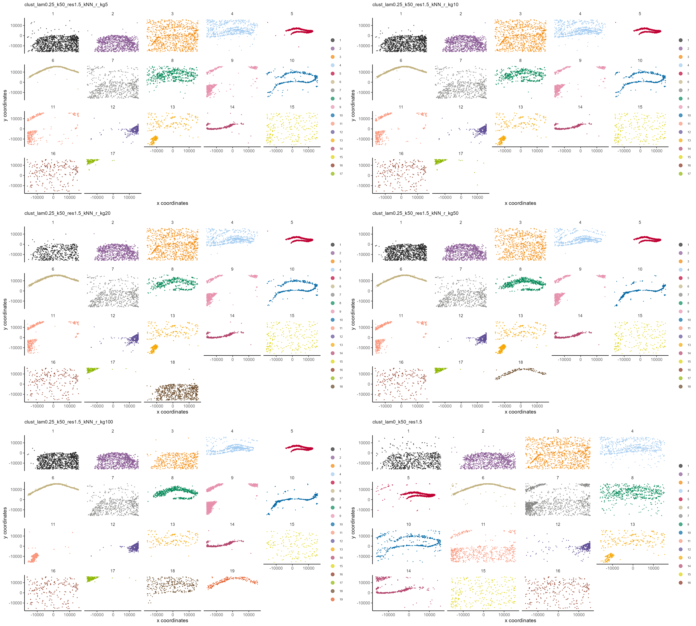
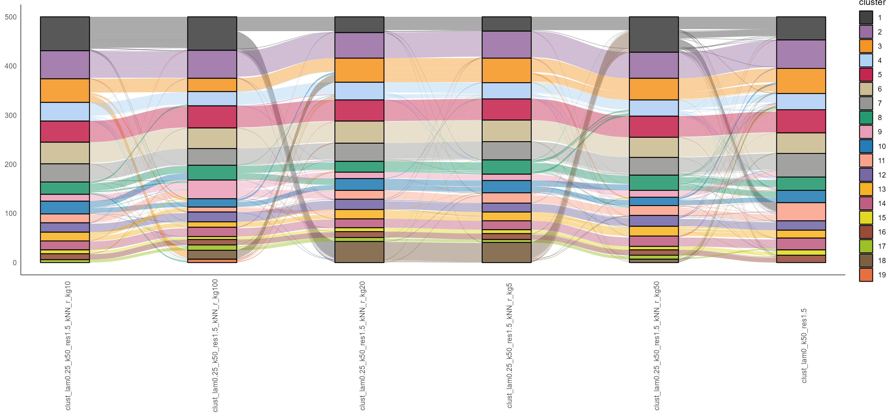
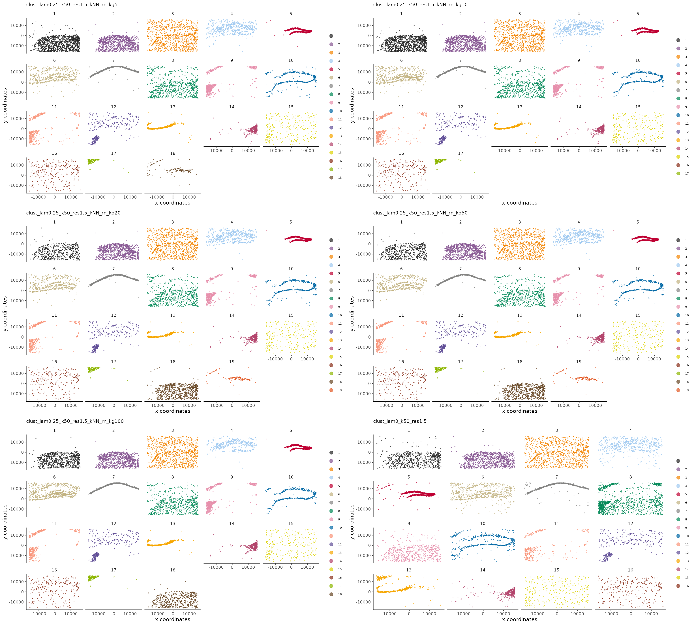
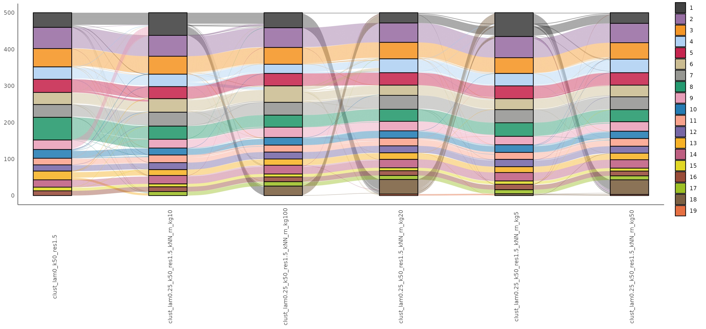

vignettes/Varying-neighbourhood-parameters.Rmd
Varying-neighbourhood-parameters.RmdIn this vignette, we explore how variation in the size of the spatial neighbourhood affects the clustering results. Recall that a cell’s microenvironment signature is computed as a weighted average of the expression of that cell’s neighbours. This weighting can be done using a kernel, such as \(1/r^n\) for \(n \in \{1, 2\}\), where \(r\) is the distance of a given neighbour cell from the index cell. Other kernels include the Gaussian kernel, or the rank-Gaussian kernel; see the manuscript for details.
library(Banksy)
library(ggplot2)
library(gridExtra)
library(scales)
library(ComplexHeatmap)
library(data.table)
library(irlba)
library(MERINGUE)
library(Matrix)
# load data
data(hippocampus)
expr <- hippocampus$expression
locs <- hippocampus$locations
k_geom_list = rep(c(5, 10, 20, 50, 100)) # number of cells in spatial neighbourhood
num_nbd = 5 # set to an integer between 1 and 5 to select which elements of k_geom_list to try.
# For eg., with num_nbd = 2, we try k_geom = 5 and 10.
subsamp = FALSE # set to FALSE if you don't want to subsample cells.
total_count <- colSums(expr)
num_genes <- colSums(expr > 0)
meta <- data.frame(total_count = total_count, num_genes = num_genes)
bank_raw <- BanksyObject(own.expr = expr, cell.locs = locs, meta.data = meta)
if (subsamp){
cells_sample = sample(bank_raw@meta.data$cell_ID, 1000)
} else {
cells_sample = bank_raw@meta.data$cell_ID
}
bank_raw <- SubsetBanksy(bank_raw, cells = cells_sample,
metadata = total_count > quantile(total_count, 0.05) &
total_count < quantile(total_count, 0.98))
bank_raw <- NormalizeBanksy(bank_raw)
clusterDiffNbdSizes<-function(bank, spatialMode_list, k_geom_list){
bankc<-copy(bank)
clustering_results<-function(spatialMode, k_geom){
bankc <- ComputeBanksy(bank=bankc, spatialMode = spatialMode, k_geom = k_geom)
bankc <- ScaleBanksy(bankc)
bankc <- Banksy:::RunPCA(bankc, lambda = 0.25, npcs = 20)
set.seed(42)
bankc <- ClusterBanksy(bankc, lambda = 0.25, pca = TRUE, npcs = 20,
method = 'leiden', k.neighbors = 50, resolution = 1.5)
return(bankc@meta.data$clust_lam0.25_k50_res1.5)
}
clustering_list <- mapply(clustering_results, spatialMode_list, k_geom_list)
clustering_df<-as.data.frame(clustering_list)
colnames(clustering_df)<-paste0('clust_lam0.25_k50_res1.5', '_', spatialMode_list, '_kg', k_geom_list)
return(clustering_df)
}
bank <- copy(bank_raw)
clust_kNN_r <- clusterDiffNbdSizes(bank = bank, spatialMode_list = rep('kNN_r', num_nbd),
k_geom_list = k_geom_list[1:num_nbd])
clust_kNN_r2 <- clusterDiffNbdSizes(bank = bank, spatialMode_list = rep('kNN_rn', num_nbd),
k_geom_list = k_geom_list[1:num_nbd])
# default banksy object
bank <- ComputeBanksy(bank, spatialMode = 'kNN_r', k_geom = 10)
bank <- ScaleBanksy(bank)
bank <- Banksy:::RunPCA(bank, lambda = 0, npcs = 20)
bank <- Banksy:::RunUMAP(bank, lambda = 0, npcs = 20, nneighbors = 50)
set.seed(42)
bank <- ClusterBanksy(bank, lambda = 0, pca = TRUE, npcs = 20,
method = 'leiden', k.neighbors = 50, resolution = 1.5)
bank_kNN_r <- copy(bank)
bank_kNN_r2 <- copy(bank)
bank_kNN_r@meta.data<-cbind(bank@meta.data, clust_kNN_r)
bank_kNN_r<-ConnectClusters(bank = bank_kNN_r, map.to = 'clust_lam0.25_k50_res1.5_kNN_r_kg10')
bank_kNN_r2@meta.data<-cbind(bank@meta.data, clust_kNN_r2)
bank_kNN_r2<-ConnectClusters(bank = bank_kNN_r2, map.to = 'clust_lam0.25_k50_res1.5_kNN_rn_kg10')
num_clusters<-max(bank_kNN_r@meta.data[clust.names(bank_kNN_r)])
cols<-Banksy:::getPalette(num_clusters)
names(cols)<-1:num_clusters
cnms<-c(clust.names(bank_kNN_r)[2:length(clust.names(bank_kNN_r))], clust.names(bank_kNN_r)[1])
spatdims<-vector(mode = "list", length = length(cnms))
for (i in 1:length(cnms)){
runid<-cnms[i]
spatdims[[i]]<-plotSpatial(bank_kNN_r, type = 'discrete',
by = runid,
col.discrete = cols,
pt.size = 0.25,
main.size = 10)+facet_wrap(~feature)+ ggtitle(runid)
}
do.call("grid.arrange", c(spatdims, ncol = 2)) Alluvial plot showing the relationship between the clusterings.
plotAlluvia(bank_kNN_r)
num_clusters<-max(bank_kNN_r2@meta.data[clust.names(bank_kNN_r2)])
cols<-Banksy:::getPalette(num_clusters)
names(cols)<-1:num_clusters
cnms<-c(clust.names(bank_kNN_r2)[2:length(clust.names(bank_kNN_r2))], clust.names(bank_kNN_r2)[1])
spatdims<-vector(mode = "list", length = length(cnms))
for (i in 1:length(cnms)){
runid<-cnms[i]
spatdims[[i]]<-plotSpatial(bank_kNN_r2, type = 'discrete',
by = runid,
col.discrete = cols,
pt.size = 0.25,
main.size = 10)+facet_wrap(~feature)+ ggtitle(runid)
}
do.call("grid.arrange", c(spatdims, ncol = 2))
Alluvial plot showing the relationship between the clusterings.
plotAlluvia(bank_kNN_r2) ##
sessionInfo()
#> R version 4.0.2 (2020-06-22)
#> Platform: x86_64-pc-linux-gnu (64-bit)
#> Running under: Ubuntu 18.04.6 LTS
#>
#> Matrix products: default
#> BLAS: /usr/lib/x86_64-linux-gnu/openblas/libblas.so.3
#> LAPACK: /usr/lib/x86_64-linux-gnu/libopenblasp-r0.2.20.so
#>
#> locale:
#> [1] LC_CTYPE=C.UTF-8 LC_NUMERIC=C LC_TIME=C.UTF-8
#> [4] LC_COLLATE=C.UTF-8 LC_MONETARY=C.UTF-8 LC_MESSAGES=C.UTF-8
#> [7] LC_PAPER=C.UTF-8 LC_NAME=C LC_ADDRESS=C
#> [10] LC_TELEPHONE=C LC_MEASUREMENT=C.UTF-8 LC_IDENTIFICATION=C
#>
#> attached base packages:
#> [1] grid stats graphics grDevices utils datasets methods
#> [8] base
#>
#> other attached packages:
#> [1] MERINGUE_1.0 irlba_2.3.5 Matrix_1.4-1
#> [4] data.table_1.14.2 ComplexHeatmap_2.6.2 scales_1.2.0
#> [7] gridExtra_2.3 ggplot2_3.3.6 Banksy_0.1.3
#>
#> loaded via a namespace (and not attached):
#> [1] colorspace_2.0-3 grr_0.9.5
#> [3] rjson_0.2.21 ellipsis_0.3.2
#> [5] mclust_5.4.10 rprojroot_2.0.3
#> [7] circlize_0.4.15 XVector_0.30.0
#> [9] GenomicRanges_1.42.0 GlobalOptions_0.1.2
#> [11] fs_1.5.2 dichromat_2.0-0.1
#> [13] clue_0.3-61 rstudioapi_0.13
#> [15] farver_2.1.1 RSpectra_0.16-1
#> [17] fansi_1.0.3 codetools_0.2-16
#> [19] splines_4.0.2 cachem_1.0.6
#> [21] knitr_1.39 jsonlite_1.8.0
#> [23] Cairo_1.6-0 cluster_2.1.0
#> [25] png_0.1-7 uwot_0.1.11
#> [27] mapproj_1.2.8 compiler_4.0.2
#> [29] assertthat_0.2.1 fastmap_1.1.0
#> [31] cli_3.3.0 htmltools_0.5.2
#> [33] tools_4.0.2 igraph_1.3.3
#> [35] gtable_0.3.0 glue_1.6.2
#> [37] GenomeInfoDbData_1.2.4 dplyr_1.0.9
#> [39] maps_3.4.0 Rcpp_1.0.9
#> [41] Biobase_2.50.0 jquerylib_0.1.4
#> [43] pkgdown_2.0.5 vctrs_0.4.1
#> [45] nlme_3.1-147 ggalluvial_0.12.3
#> [47] sccore_1.0.1 xfun_0.31
#> [49] stringr_1.4.0 lifecycle_1.0.1
#> [51] zlibbioc_1.36.0 ragg_0.3.1
#> [53] MatrixGenerics_1.2.1 parallel_4.0.2
#> [55] SummarizedExperiment_1.20.0 RColorBrewer_1.1-3
#> [57] yaml_2.3.5 memoise_2.0.1
#> [59] Matrix.utils_0.9.8 sass_0.4.2
#> [61] stringi_1.7.8 RcppHungarian_0.2
#> [63] highr_0.9 S4Vectors_0.28.1
#> [65] desc_1.4.1 BiocGenerics_0.36.1
#> [67] shape_1.4.6 GenomeInfoDb_1.26.7
#> [69] pals_1.7 rlang_1.0.4
#> [71] pkgconfig_2.0.3 systemfonts_1.0.4
#> [73] matrixStats_0.62.0 bitops_1.0-7
#> [75] evaluate_0.15 lattice_0.20-41
#> [77] purrr_0.3.4 leidenAlg_1.0.3
#> [79] labeling_0.4.2 tidyselect_1.1.2
#> [81] RcppAnnoy_0.0.19 plyr_1.8.7
#> [83] magrittr_2.0.3 R6_2.5.1
#> [85] IRanges_2.24.1 generics_0.1.3
#> [87] DelayedArray_0.16.3 DBI_1.1.3
#> [89] pillar_1.7.0 withr_2.5.0
#> [91] mgcv_1.8-31 RCurl_1.98-1.7
#> [93] tibble_3.1.7 crayon_1.5.1
#> [95] utf8_1.2.2 rmarkdown_2.14
#> [97] GetoptLong_1.0.5 digest_0.6.29
#> [99] tidyr_1.2.0 dbscan_1.1-10
#> [101] stats4_4.0.2 munsell_0.5.0
#> [103] bslib_0.3.1